Mon, 19 Nov 2012 22:03:00 +0200
Javi Martínez: "No somos los Beckham de Múnich"
Javi Martínez: "No somos los Beckham de Múnich"
Puedes leer la noticia en el siguiente enlace.leer la noticia completa
Puedes leer la noticia en el siguiente enlace.
leer la noticia completa
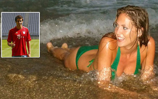
Mon, 19 Nov 2012 20:34:00 +0200
Luzhniki, un estadio de grandes recuerdos para Piqué
Luzhniki, un estadio de grandes recuerdos para Piqué
"Yendo al hotel después del entrenamiento. ¡Grandes recuerdos del Luzhniki Stadium cuando nosotros ganamos la final de la Champions League del 2008 contra el Chelsea!", escribió en inglés en su perfil de twitter Piqué este lunes. No estuvo entre los ...leer la noticia completa
"Yendo al hotel después del entrenamiento. ¡Grandes recuerdos del Luzhniki Stadium cuando nosotros ganamos la final de la Champions League del 2008 contra el Chelsea!", escribió en inglés en su perfil de twitter Piqué este lunes. No estuvo entre los ...
leer la noticia completa
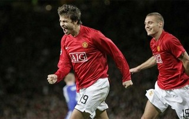
Mon, 19 Nov 2012 19:47:00 +0200
Zan Tabak hará de Dusko Ivanovic
Zan Tabak hará de Dusko Ivanovic
El técnico croata Zan Tabak entrenará al Caja Laboral a partir de ahora, después de que ayer el club de Vitoria destituyera a Dusko Ivanovic tras la derrota en casa frente al Blusens Monbus (68-77). Tabak (Split, Croacia, 1970) se ha comprometido co...leer la noticia completa
El técnico croata Zan Tabak entrenará al Caja Laboral a partir de ahora, después de que ayer el club de Vitoria destituyera a Dusko Ivanovic tras la derrota en casa frente al Blusens Monbus (68-77). Tabak (Split, Croacia, 1970) se ha comprometido co...
leer la noticia completa
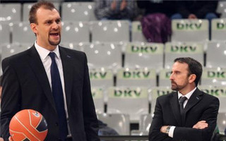
Mon, 19 Nov 2012 18:28:00 +0200
Escándalo monumental en la junta de accionistas del Espanyol
Escándalo monumental en la junta de accionistas del Espanyol
El hasta ahora máximo mandatario del RCD Espanyol, Ramon Condal, fue increpado por un numeroso grupo de seguidores durante la Junta General de Accionistas del club, celebrada en la Fira de Cornellà, tras la cual se nombrará al nuevo presidente de la ...leer la noticia completa
El hasta ahora máximo mandatario del RCD Espanyol, Ramon Condal, fue increpado por un numeroso grupo de seguidores durante la Junta General de Accionistas del club, celebrada en la Fira de Cornellà, tras la cual se nombrará al nuevo presidente de la ...
leer la noticia completa
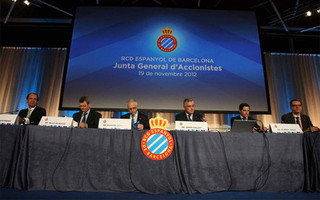
Mon, 19 Nov 2012 18:16:00 +0200
Anelka a Domenech: "Maricón, haz el equipo tu solo"
Anelka a Domenech: "Maricón, haz el equipo tu solo"
Domenech reserva las palabras más duras para Anelka, al que acusa de haber roto la dinámica del grupo al jugar la carta individual, de no entrenarse con fuerza y de haberle insultado en el descanso del partido contra México. La prensa francesa publi...leer la noticia completa
Domenech reserva las palabras más duras para Anelka, al que acusa de haber roto la dinámica del grupo al jugar la carta individual, de no entrenarse con fuerza y de haberle insultado en el descanso del partido contra México. La prensa francesa publi...
leer la noticia completa
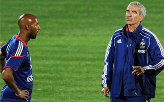
Mon, 19 Nov 2012 17:46:00 +0200
El Barça entrena en césped artificial... y a cero grados
El Barça entrena en césped artificial... y a cero grados
La plantilla se entrenó en el Luzhniki Stadium, campo de césped artificial, una superficie poco habitual para los azulgranas. Como poco habitual es también el frío que, como es natural en estas fechas, hace en Moscú. Durante la sesión, la temperatura...leer la noticia completa
La plantilla se entrenó en el Luzhniki Stadium, campo de césped artificial, una superficie poco habitual para los azulgranas. Como poco habitual es también el frío que, como es natural en estas fechas, hace en Moscú. Durante la sesión, la temperatura...
leer la noticia completa
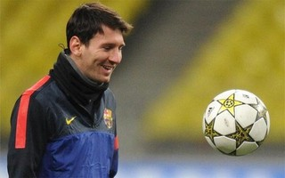
Mon, 19 Nov 2012 17:13:00 +0200
¡El Barça coincide en Moscú con... Irina Shayk!
¡El Barça coincide en Moscú con... Irina Shayk!
La expedición del FC Barcelona y la rusa Irina Shayk coincidieron en su llegada a Rusia y aterrizaron en Moscú más o menos hacia la misma hora este pasado domingo. De este modo, la novia de Cristiano Ronaldo también se desplazó a la capital rusa por ...leer la noticia completa
La expedición del FC Barcelona y la rusa Irina Shayk coincidieron en su llegada a Rusia y aterrizaron en Moscú más o menos hacia la misma hora este pasado domingo. De este modo, la novia de Cristiano Ronaldo también se desplazó a la capital rusa por ...
leer la noticia completa

Mon, 19 Nov 2012 16:39:00 +0200
Varane la lía en Twitter... y luego echa la culpa al Community Manager
Varane la lía en Twitter... y luego echa la culpa al Community Manager
"Victoria del Real Madrid este fin de semana ante los catalanes del Athletic de Bilbao (5-1). ¿Te gusta?", fue el comentario publicado por Varane tras el triunfo contundente del equipo blanco ante el Athletic, una metedura de pata que ha provocado mu...leer la noticia completa
"Victoria del Real Madrid este fin de semana ante los catalanes del Athletic de Bilbao (5-1). ¿Te gusta?", fue el comentario publicado por Varane tras el triunfo contundente del equipo blanco ante el Athletic, una metedura de pata que ha provocado mu...
leer la noticia completa
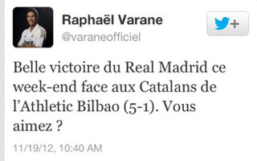
Mon, 19 Nov 2012 21:51:00 +0200
Biglieri y Sanmarti, campeones en Collbató
Biglieri y Sanmarti, campeones en Collbató
La pareja formada por Enric Sanmarti y Adrián Biglieri derrotó en la final al dúo compuesto por David Luque y Jordi Juan por 6-4 y 6-3. La entrega de premios la realizaron el número uno del mundo de pádel, Fernando Belasteguín y el ex entrenador del ...leer la noticia completa
La pareja formada por Enric Sanmarti y Adrián Biglieri derrotó en la final al dúo compuesto por David Luque y Jordi Juan por 6-4 y 6-3. La entrega de premios la realizaron el número uno del mundo de pádel, Fernando Belasteguín y el ex entrenador del ...
leer la noticia completa
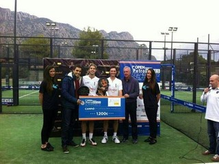
Mon, 19 Nov 2012 20:01:00 +0200
El Espanyol debe 144 millones de euros
El Espanyol debe 144 millones de euros
La deuda se ha reducido, con respecto al anterior ejercicio, en 3,8 millones y el superávit total de la pasada temporada es de 200.991,17 euros, mientras los beneficios han aumentado un cuatro por ciento y los gastos se han reducido un seis y medio p...leer la noticia completa
La deuda se ha reducido, con respecto al anterior ejercicio, en 3,8 millones y el superávit total de la pasada temporada es de 200.991,17 euros, mientras los beneficios han aumentado un cuatro por ciento y los gastos se han reducido un seis y medio p...
leer la noticia completa
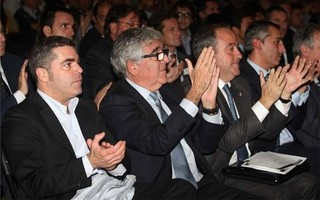
Mon, 19 Nov 2012 19:23:00 +0200
Mascherano muestra como combaten el frío de Moscú
Mascherano muestra como combaten el frío de Moscú
El Barça llegó a tierras rusas para enfrentarse el martes al Spartak de Moscú de Unai Emery. Los blaugrana fueron recibidos por las bajas temperaturas. Javier Mascherano mostró en su cuenta de Facebook como combaten el frío él y sus co...leer la noticia completa
El Barça llegó a tierras rusas para enfrentarse el martes al Spartak de Moscú de Unai Emery. Los blaugrana fueron recibidos por las bajas temperaturas. Javier Mascherano mostró en su cuenta de Facebook como combaten el frío él y sus co...
leer la noticia completa
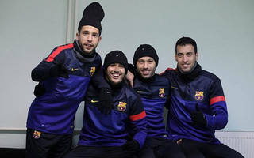
Mon, 19 Nov 2012 18:17:00 +0200
No te pierdas todos los goles de la Jornada 12
No te pierdas todos los goles de la Jornada 12
Entra y mira los goles marcados por los equipos de la Liga BBVA en la Jornada 12.leer la noticia completa
Entra y mira los goles marcados por los equipos de la Liga BBVA en la Jornada 12.
leer la noticia completa
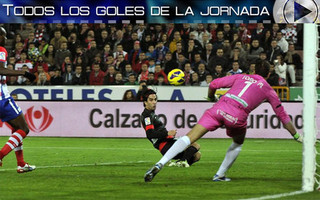
Mon, 19 Nov 2012 18:15:00 +0200
Del manotazo a Ingles... a las jugadas imposibles de la jornada
Del manotazo a Ingles... a las jugadas imposibles de la jornada
El fin de semana dejó un sinfín de anécdotas y jugadas curiosas en nuestras canchas: desde el manotazo de Muñoz al barcelonista Joe Ingles al autopase fallido de Pau Ribas, de la Penya. Caídas, jugadas imposibles, triples desde propio campo... todo l...leer la noticia completa
El fin de semana dejó un sinfín de anécdotas y jugadas curiosas en nuestras canchas: desde el manotazo de Muñoz al barcelonista Joe Ingles al autopase fallido de Pau Ribas, de la Penya. Caídas, jugadas imposibles, triples desde propio campo... todo l...
leer la noticia completa
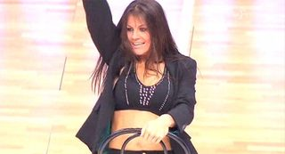
Mon, 19 Nov 2012 17:19:00 +0200
Consigue una invitación para asistir a la presentación del libro de Johan Cruyff
Consigue una invitación para asistir a la presentación del libro de Johan Cruyff
Johan Cruyff presentará su libro este próximo 22 de noviembre, en la Antiga Fàbrica Damm, en la calle Roselló, 515 de Barcelona. El libro: Fútbol. Mi filosofía, promete ser uno de los éxitos de estas Navidades en las librerías. Se trata del pri...leer la noticia completa
Johan Cruyff presentará su libro este próximo 22 de noviembre, en la Antiga Fàbrica Damm, en la calle Roselló, 515 de Barcelona. El libro: Fútbol. Mi filosofía, promete ser uno de los éxitos de estas Navidades en las librerías. Se trata del pri...
leer la noticia completa
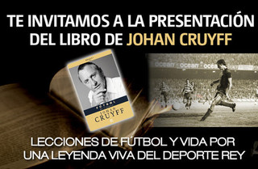
Mon, 19 Nov 2012 16:51:00 +0200
Oleguer admite que se negó a jugar con España
Oleguer admite que se negó a jugar con España
Oleguer, que forma parte de la lista del partido independentista CUP en las próximas elecciones catalanas, desveló las causas por las cuales, tras ser citado a una concentración de la selección española en el 2005, nunca más fue citado ni debutó con ...leer la noticia completa
Oleguer, que forma parte de la lista del partido independentista CUP en las próximas elecciones catalanas, desveló las causas por las cuales, tras ser citado a una concentración de la selección española en el 2005, nunca más fue citado ni debutó con ...
leer la noticia completa
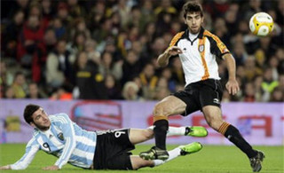